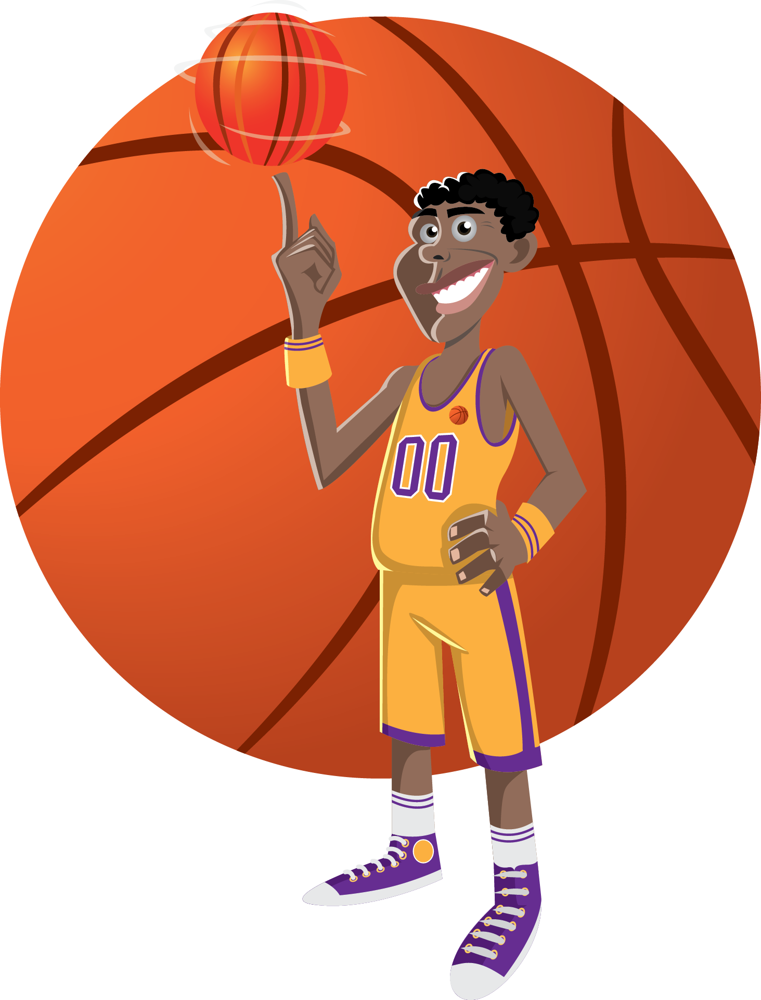

"Hello, I'm Artemio III E. Lorredo, a dedicated IT aspirant on a perpetual quest for knowledge and mastery in the ever-evolving world of technology. With a fervent passion for problem-solving and a keen eye for detail, I approach each project as a unique opportunity to innovate and contribute to the digital landscape.
My journey in IT is not just about writing lines of code; it's a continuous exploration of cutting-edge technologies and a commitment to staying at the forefront of industry trends. Proficient in Web Development, I thrive in dynamic environments where adaptability and creativity are key.
Beyond technical skills, I bring a collaborative spirit to every team, valuing effective communication and teamwork. My personal portfolio is a testament to my diverse projects, showcasing my ability to transform concepts into functional, user-centric solutions.
Join me on this exciting adventure as I embrace the challenges of IT, turning ideas into reality and contributing to the ever-growing tapestry of technological innovation. Let's build the future together, one algorithm, one project, and one breakthrough at a time."
Educational Attainment
Tertiary School
- Laguna State Polytechnic University
Secondary School
- Gumaca National High School
- Macalelon High School
Tertiary School
- Macalelon Central Elementary School
Person's Hobbies

Basketball
.png)
Computer
Singing